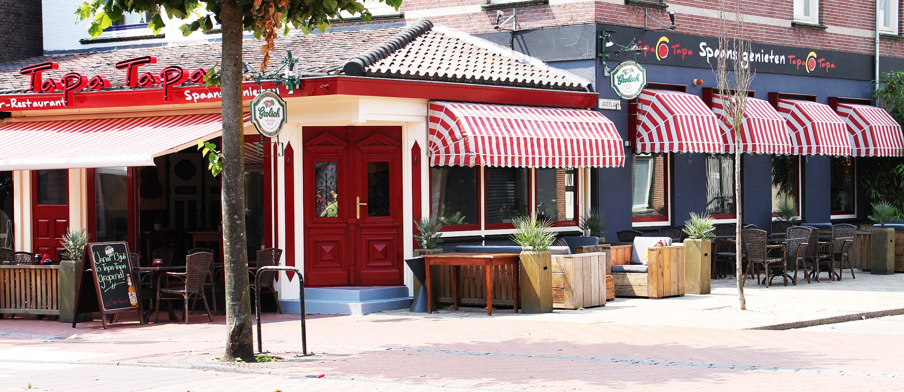
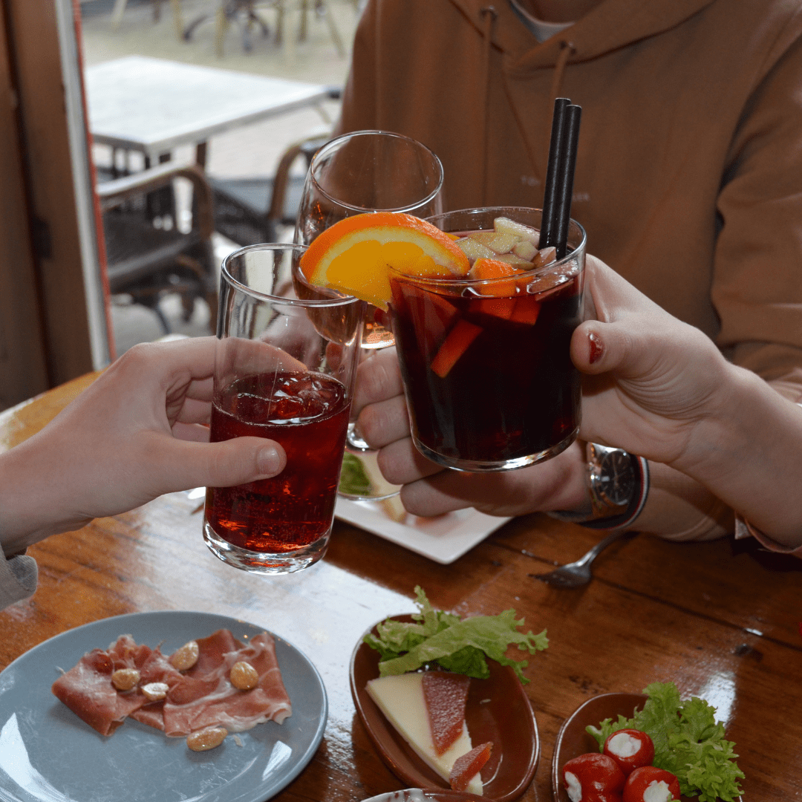
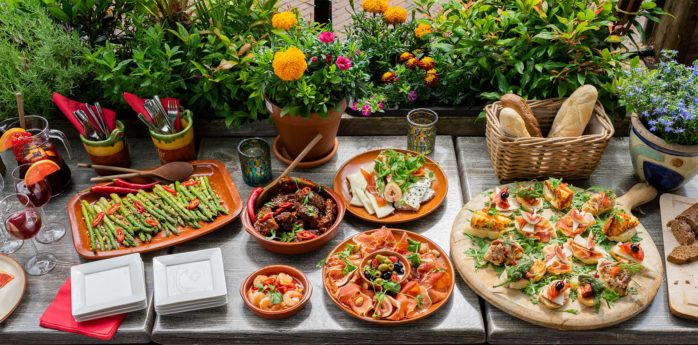

Spaanse tapasbar aan de Slotlaan
Spaans genieten in Zeist
Al meer dan 15 jaar authentieke Spaanse tapas. Per stuk of lekker onbeperkt, met een glas wijn, een biertje of een kan sangria.
Een stukje Spanje, binnen of op ons terras
Welkom bij Tapa Tapa, dé Spaanse tapasbar van Zeist. Onze menukaart biedt een grote variatie aan tapas met pure en verse ingrediënten.
Onze chef-kok en zijn team bereiden elke dag met passie en zorg authentieke Spaanse gerechten zoals pimientos de padrón, gambas al ajillo, tortilla española en chorizo al vino. Daarnaast hebben we een uitgebreid assortiment Spaanse wijnen en cocktails.
Onze gastvrije en gezellige sfeer zorgt ervoor dat je je direct thuis voelt. Ook voor catering en groepsreserveringen ben je bij ons aan het juiste adres.
Buen provecho en hasta pronto!


À la carte of onbeperkt
Bij à la carte kies je losse gerechtjes van de kaart. Bij onbeperkt tapas geniet je 2,5 uur lang van dezelfde gerechten voor een vaste prijs per persoon, van de kaart én van de seizoenskaart. Er is dus geen apart onbeperkt-menu.
- 0 t/m 3 jaargratis
- 4 t/m 10 jaar€ 1,75 per leeftijdsjaar
- 11 t/m 13 jaar€ 19,50
Zo werkt onbeperkt tapas
- Je kruist per ronde maximaal 5 gerechten per tafel aan op het invulbriefje. Op? Dan herhaal je dit.
- Het aantal rondes is onbeperkt, maximaal 2,5 uur.
- De gerechten van de seizoenskaart staan onderaan het invulbriefje.
- Het nagerecht zit niet in het arrangement; dat bestel je los bij de bediening.
- Voor niet opgegeten tapas rekenen we € 2,- per stuk.
- Op feestdagen kan een aangepast tarief gelden; dat staat dan op de website.
Als we acties hebben is het drukker dan normaal. Reserveer dan alvast je tafel: 030 691 70 88.
Kerst 2026 vier je op z'n Spaans
Op vrijdag 25 en zaterdag 26 december: onbeperkt tapas inclusief dessert voor € 39,95 per persoon.
Geen voor-, hoofd- of nagerecht kiezen: je geniet gewoon van al onze tapas, zoveel en zo vaak als je wilt. Van vlees- en visgerechten tot vegetarische specialiteiten, met sfeervol gedekte tafels en fonkelende kerstlichtjes. Geen kerststress, geen afwas, maar puur genieten.
Kerstprijzen voor het hele gezin
- Volwassenen en jongeren vanaf 14 jaar€ 39,95
- Kinderen 11 t/m 13 jaar€ 27,50
- Kinderen 3 t/m 10 jaar€ 2,50 per levensjaar
- Kinderen 0 t/m 2 jaargratis
Onbeperkt tapas maximaal 2,5 uur · maximaal 5 gerechten per ronde · niet in combinatie met andere acties · Grand Dessert + € 5,- · alleen geldig op 25 en 26 december 2026.

Kerstboxen voor thuis
Liever thuis? Onze kerstboxen zitten vol feestelijke tapas, desserts en lekkernijen om te delen. Alleen een oven nodig: even opwarmen, mooi op tafel zetten en genieten. Er is een Kerstbox, een Vega Kerstbox en een Luxe Kerstbox.
Wat zit er in de Kerstbox?
- Pan Tapa Tapa, brood met dips
- Plateau mixto, mix van ham en kaas
- Ensalada de pollo, kipsalade met bleekselderij en appel
- Ensalada de atún, tonijnsalade met paprika en rode ui
- Carpaccio (1 p.p.)
- Ensalada con cabra, salade met geitenkaas
- Pinchos pescados, gemarineerde visspiesjes
- Salmón frito, zalm met teriyaki en wakame
- Verduras a la brasa, gegrilde groenten
- Costillas de cerdo, spareribs
- Dátiles con bacon, dadels met geitenkaas en spek
- Tortilla de patatas, Spaanse aardappelomelet
- Voor 2 personen€ 75,-
- Voor 3 personen€ 112,50
Te bestellen vanaf 2 personen, voor 24, 25 en 26 december. Wil je zeker zijn van een box, bestel dan vóór 22 december. Afhalen of laten bezorgen op 24, 25 of 26 december tussen 13:00 en 17:00 uur. Bezorgen binnen 20 km van Zeist voor € 7,50; zelf afhalen kan altijd.
Bestel je kerstboxMet een groep
Vanaf 8 personen serveren we onbeperkt tapas in menuvorm (maximaal 2,5 uur). Eerst zetten we een assortiment koude tapas van de kaart op tafel, daarna een assortiment warme tapas. Mis je iets of wil je iets bijbestellen? Dat kan onbeperkt.
- Onbeperkt tapas, ma t/m do€ 29,95 p.p.
- Onbeperkt tapas, vr t/m zo€ 34,95 p.p.
- Inclusief Grand Dessertvanaf € 37,50 p.p.
- All-in arrangement, met drank€ 55,- p.p.
Bij het all-in arrangement kies je uit sangria, wijnen, bier en een breed scala aan alcoholvrije drankjes. Groepen reserveren graag telefonisch, in verband met de beschikbaarheid.
Bel voor een groepsreserveringJarig? Wij trakteren
Vier je verjaardag met vrienden of familie bij Tapa Tapa en laat je in de watten leggen.
Vanaf 4 volwassen menu's is de jarige gratis; met minder volwassenen eet de jarige voor de halve prijs. Alleen geldig voor de jarige op de dag zelf, na vooraf tonen van een geldig legitimatiebewijs. Alleen in combinatie met onbeperkt tapas en niet met andere acties. Vragen? Bel even of vraag het bij binnenkomst.
Tapas catering, op iedere locatie
Onze tapascatering brengt de Spaanse keuken naar elke gewenste locatie: voor een borrel, receptie, bedrijfsfeest, verjaardag of bruiloft. Vanaf 15 personen en voor ieder budget.
Werken bij Tapa Tapa
Zin om deel uit te maken van ons team? In de keuken bereid je traditionele en vernieuwende tapasgerechten met aandacht voor detail en smaak. In de bediening ben jij de glimlach die onze gasten begroet en zorg je dat ze zich meteen thuis voelen. Of je nu een doorgewinterde professional bent of net begint in de horeca: bij ons leer je van ervaren collega's en groei je in een team waar samenwerken en plezier hand in hand gaan.
We zoeken nu
- Kok / keukenhulp
- Medewerk(st)er bediening, parttime of fulltime
Stuur je cv, een foto en een korte introductie. Vertel ons waarom jij de juiste smaak hebt voor Tapa Tapa.
Solliciteer via e-mailKom langs aan de Slotlaan
Tapa Tapa zit aan dé winkelstraat van Zeist en is goed bereikbaar met het openbaar vervoer. Op loopafstand zijn verschillende parkeergarages; die zijn gratis na 19:00 uur en op vrijdag na 21:00 uur.
- Adres
- Slotlaan 251
3701 GG Zeist - Telefoon
- 030 691 70 88
- info@tapa-tapa.nl
- Open
- Maandag t/m zondag 17:00 – 23:00
Keuken open tot 22:00